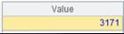
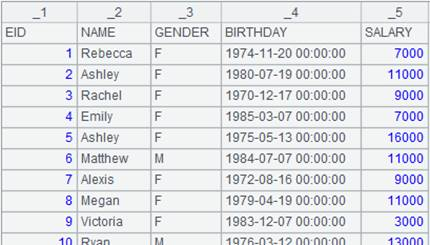
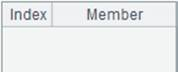
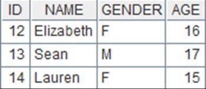
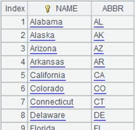
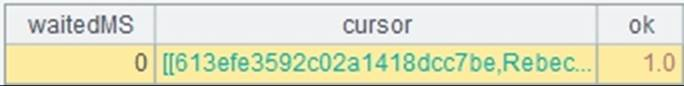

Description:
Retrieve a table sequence from an Excel file object.
Syntax:
xo.xlsimport(Fi,..;s,b:e)
Note:
The function retrieves data from row b to row e on sheet s or on the sth sheet in an Excel file, and returns a table sequence. When all parameters are absent, get the table sequence on the first sheet. xo is an Excel file object read in a non-@w way.
Parameter:
|
xo |
An Excel file object read in non-@w way |
|
Fi |
Excel column name; retrieve all fields when omitted |
|
s |
Page name/page number |
|
b |
Row number; the first row by default |
|
e |
Row number; when e < 0, it is the row counted backwards; retrieve data to the last row when omitted |
Option:
|
@t |
The first row is the header row; when parameter b is present, the header row is row b |
|
@c |
Return the retrieved table sequence as a cursor; here the Excel file object must be read with @r option |
|
@b |
Remove blank rows before and after the Excel data when reading content in; it becomes invalid when @c option is also present |
Return value:
A table sequence
Example:
|
|
A |
|
|
1 |
=file("E1.xls").xlsopen() |
Read the E1.xls file and return it  |
|
2 |
=A1.xlsimport() |
Read the table sequence on the first sheet as there are no parameters  |
|
3 |
=A1.xlsimport@t(ID,NAME;2) |
Retrive columns whose names are ID and NAME on the second sheet, and make the first row as the header row  |
|
4 |
=A1.xlsimport(;"employee",10:20) |
Retrieve data from row 10 to row 20 on the employee sheet  |
|
D:/excel/emp.xls |
Below is the content of emp.xls:  |
|
|
6 |
=file(A5).xlsopen().xlsimport@tb() |
Use @b option to remove blank rows before and after the data when reading it in  |